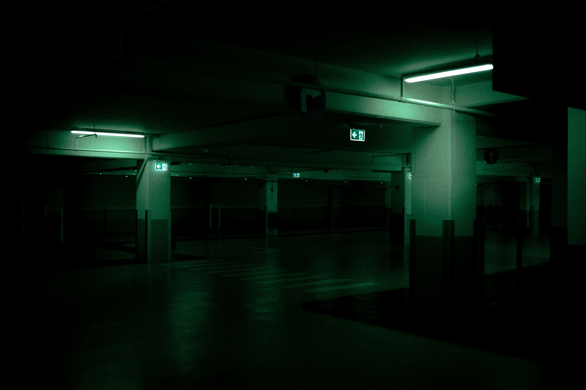
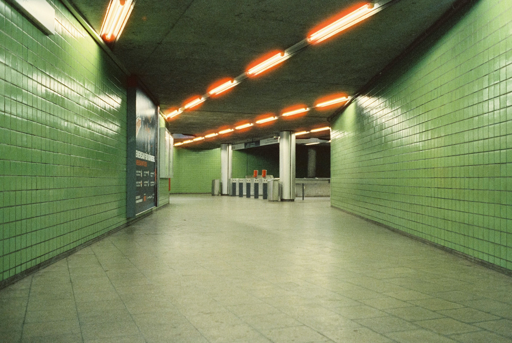

<!DOCTYPE html>
<html lang="en">
  <head>
    <meta charset="UTF-8" />
    <meta name="viewport" content="width=device-width, initial-scale=1.0" />
    <title>Image Gallery</title>
    <script src="app.js" defer></script>
    <link rel="stylesheet" href="style.css" />
  </head>
  <body>
    <div id="thumb-container"></div>
    <!--  -->
    <!-- <a>
      <div id="image-track">
        
        
        
        
        
        
      </div>
    </a> -->

    <!-- <button id="next" aria-label="Go to the next image">next</button>

    <button id="prev" aria-label="Go to the previous image">previous</button> -->
    <!-- 
    <div class="text">
      liminal spaces are empty or abandoned places that appear eerie, forlorn,
      and often surreal. Liminal spaces are commonly places of transition,
      pertaining to the concept of liminality. Liminal space is the uncertain
      transition between where you've been and where you're going physically,
      emotionally, or metaphorically. To be in a liminal space means to be on
      the precipice of something new but not quite there yet. The word "liminal"
      comes from the Latin word “limen,” which means threshold.
    </div> -->
  </body>
</html>
